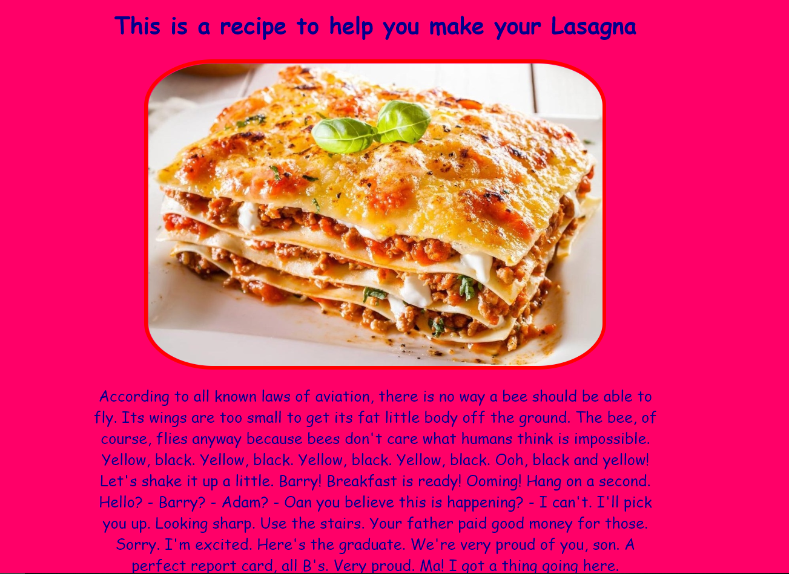
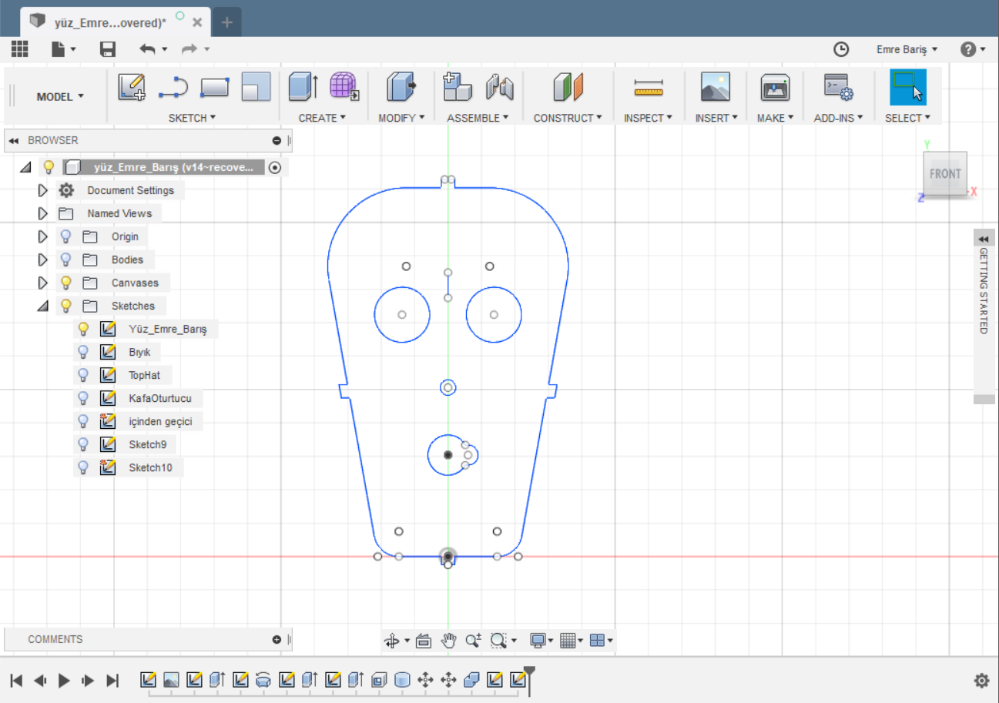
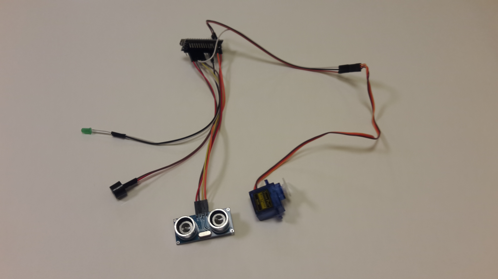
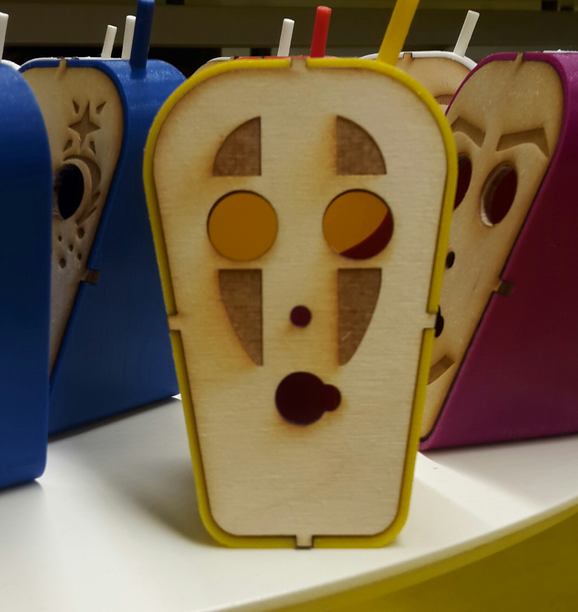
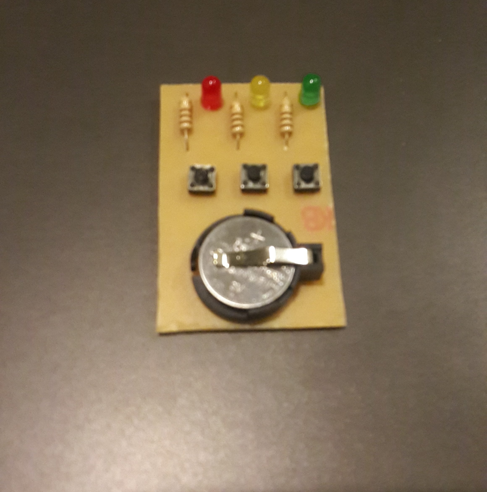

İlk günün dersleri eglenceliydi html kodlamasi ile basit yemek tarifi sitesi yapmak ögretildi bazen çok hizli ilerlesek ve kaçridigim yerler olsa da de yanimdakilerin de yardimiya güzel siteler yapmayi basardigimizi düsünüyorum. 
16/07/2018
Derslerde bu sefer 3 boyutlu modelleme ve 3d Printer/Laser cutter gibi aletleri kullanma gibi konular üzerinde durduk kendi yüz tasarimimizi ve onu üzerine koyucagimiz bir stand ve bir sapka modelledik Ögle yemepi sonrasi son birkaç düzenleme yapip son detaylari ekledik yarin ardunio kullanarak özellikler ekliyecegiz ve herkesin yaptiklarinin son durumunu görücez. 
17/07/2018
Bu sefer konumuz ardunioydu. az da olsa bir bilgim olan bir konuydu ama ders sahesinde konuda daha bilgilendim. Ders süresinde led yakma buzzer dan ses çikarma ses sensörü kullanma ve servo çalistirma gibi konularda çalistik. Ögle yemeginden sonra da hepsini birlestirip ses sensörünün önünde bir sey oldugunda buzzerin ötmesini ledin yanmasini ve servonun çalismasini saglayacak bir devre yapdik. 
18/07/2018
Dersimizin konusu elektronik prototipleme idi. Dersin basinda kicad adli programi kullanarak yapcagimiz devrenin planini yaptik yemekten sonra da çikti alinan devre modellerini bakir plakaya ütüleyip sonra aside attıp fazladan bakırları erittik. Dersin diger yarisina geçtik. Dersin diger yarisinda da 3d modelleme dersinde modelledigimiz laser cutter dan çikarilan yüz ve 3d yazicidan dan basilan sapka biyik burun gibi parçalarini zimparalayarak ve düzelterek birlestirdik Ardunio parçalarini ekleme disinda her seyi bitirdik. 
19/07/2018
Maker için open fab sinifina geçtik. Maker dersi basladi ve gruplara ayrildik. Ilk grup diger atolyeye geçip geçen ders yaptigimiz bakir devre kartları üzerinde çalistilar Ilk grup da önceki ders zimparalayarak düzenledigimiz kafalari birlestirdik. Arduino parçalarini test ettik diger parçalari birlestirdik ve yapistirdik en sonunda fabiler tamamlandı. Diger gruba çagirilana kadar sinifa geri dönüp Blog konusunda kendi sitemde düzenlemeler yaptim ve diger insanlara yardim ettim. Diger gruptan çagirildigimda lehim yaptim.
20/07/2018
Dil ögretmeni gelmeyince ben de openfab e erken gitmeye karar verdim. Open fab de ders baslayana kadarki bos zamani bloguumu gelistirmek için kullandim. insanlar sinifa gelmeye basladiginda ve ders zamani geldiginde ders basladi. Dersde Python yazilim dilini ögrendik. Döngüler ve internet sitesine baglanip open fab instagramini takip etme gibi farklı yollarla bu dili ögredik.

23/07/2018
Final projesinin ilk günü geldi. Projenin amacı youtube aracılığı ile canlı yayın yapacak bir cihaz üretmekti. Ben sunum grubuna yerlestirildim. Görevim instructables sitesinin kodlama ksimini düzenlemek. Ilk gün web sitesinin tasarimi logo tasarimi ögrencilerle röportaj gibi konularda grupça çalistik. Grup olarak amacimiz diger gruplarin yaptiklarini sunuma hazirlamak oldugu için ve diger gruplar ilk günden fazla ilerleme kaydetemediginden bizim de isimiz çok yoktu oyüzden biraz bos g
24/07/2018
Bu günün maker dersinde sunum gurubu olarak logonun son detaylarini bitirdik. Sonra önceki gün yapmadigimiz kisilerle röportaj yaptik. Vidyonun editini yaptik ve instructbles sitesi için eklentiler yaptık ayni zamanda web sitesini de neredeyse son durumuna getirdik

25/07/2018
According to all known laws of aviation, there is no way a bee should be able to fly. Its wings are too small to get its fat little body off the ground. The bee, of course, flies anyway because bees don't care what humans think is impossible. Yellow, black. Yellow, black. Yellow, black. Yellow, black. Ooh, black and yellow! Let's shake it up a little. Barry! Breakfast is ready! Ooming! Hang on a second. Hello? - Barry? - Adam? - Oan you believe this is happening? - I can't. I'll pick you up
26/07/2018